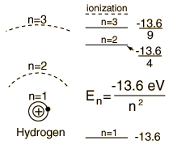
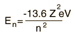
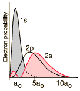
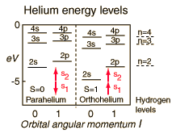
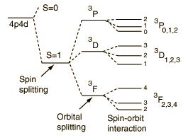

Quantum Numbers and Atomic Energy Levels
From the Bohr model or Schrodinger equation for hydrogen, the solution for the electron energy levels shows that they depend only upon the principal quantum number.
|

| For hydrogen and other nuclei stripped to one electron, the energy depends only upon the principal quantum number n.

This fits the hydrogen spectrum unless you take a high resolution look at fine structure where the electron spin and orbital quantum numbers are involved. At even higher resolutions, there is a tiny dependence upon the orbital quantum number in the Lamb shift.
|
|

|
For helium you have a pair of electrons, and the helium energy levels associated with one electron in an n=2 excited state give a sizable dependence on the orbital quantum number l. This can be attributed to the fact that the 2s electron penetrates more inside the charge of the 1s electron. The 2s is therefore less shielded from the attractive force of the nucleus than the 2p and is lower in energy. This dependence upon the orbital quantum number of a single excited state electron is accounted for by the penetration of the wavefunction and can be clearly seen in the energy levels of the alkali metals such as lithium and sodium.
|
|

|
Another effect on the helium energy levels can be associated with the spin quantum number and arises from the symmetry requirements of the Pauli exclusion principle. Note that for given values of principal and orbital quantum numbers, the states with parallel spins are significantly lower than those with anti-parallel spins. This is sometimes referred to as the spin-spin effect and summarized in Hund's Rule #1.
|
For light atoms with multiple electrons outside a closed shell, we can combine the orbital angular moments to give a resultant angular momentum L. Considering the vector model, we expect that we can get different values of L for a given set of individual orbital angular momenta. It turns out that the largest possible L value has the lowest energy. This is sometimes referred to as the "orbit-orbit effect" (Hund's Rule #2)
|

|
With multiple electrons there is an additional source of splitting of the electron energy levels which is characterized in terms of another quantum number, the total anglular momentum quantum number J. The source of the splitting is called the spin-orbit effect. For light atoms, the spins and orbital angular momenta of individual electrons are found to interact with each other strongly enough that you can combine them to form a resultant spin S and resultant orbital angular momentum L (this is called Russell-Saunders or LS coupling). The S and L are combined to produce a total angular momentum quantum number J, and it is found that higher J values lie lower in energy (Hund's Rule #3)
|
When an external interaction such as a magnetic field is applied, then further splitting of the energy levels occurs, and that splitting is characterized in terms of the magnetic quantum number associated with the z-component of angular momentum. This splitting is called the Zeeman effect. Effects on energy levels from applied electric fields are called Stark effects.
|
Index
Schrodinger equation concepts
Hydrogen concepts
Atomic structure concepts |